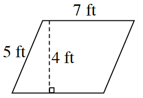
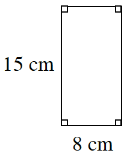

What is my number?
Finding Unknowns
Today you will think about how to find a mystery number based on information given to you as part of a game. In the game, you will practice mental-math computations and will investigate ways to represent different situations. When you solve the number-game puzzles, you also might use a skill called reversing your thinking. Reversing is an important way of thinking mathematically. It means solving problems both backward and forward. As you work with your team, ask each other these questions:
How can we represent it?
What is the best approach for this problem?
Have we found all of the answers?
GUESS MY NUMBER
Today you will play the “Guess My Number” game. A pencil and a piece of paper may come in handy as you play the game. Each game below gives clues to a mystery number. Your task has two parts. First, figure out what the number is. Second, explain why you think it is the mystery number.
Game #1:
When I triple my number and add five, I get eleven. What is my number?
Game #2:
When I add two to my number and then multiply it by five, I get thirty. What is my number?
Game #3:
When I take half of my number and add two, I get twenty-four. What is my number?
Game #4:
When I double my number and add eight, I get my number plus twelve. What is my number?
Game #5:
When I double my number, add four, and then subtract my number and subtract three, I get my number plus one. What is my number?
Make up your own “Guess My Number” games with your team and be ready to share them with the class. Make at least one game that has only one answer. Also make one that works for all numbers. Can you create a game that does not work for any number?
Methods & Meanings
Mean
To understand a set of data, you often need to be able to describe the approximate “center” of that data. One way to do this is to find the mean of the data set, which is also called the arithmetic average.
To find the mean of a set of data, add the values of the data elements (numbers) and then divide by the number of items of data. The mean is a useful way to describe the data when the set of data does not contain outliers. Outliers are numbers that are much smaller or much larger than most of the other data in the set.
Suppose the following data set represents the number of home runs hit by the best seven players on a Major League Baseball team during one season:
, , , , , , and .
The mean is .
This number shows that a typical player among the best seven home-run hitters on the team hits about or home runs each season.
Review & Preview
Thu wants to play “Guess My Number.” She states, “When I triple my number and add five, I get twenty-six. What is my number?” What is her number? Show how you know.
One of the ideas that you have explored in previous courses is how to describe a set of data. One of the ways that you may have seen before is finding an average (also called a mean). Read the Math Notes box for this lesson to review what a mean is and how to find it. Then find the mean for each set of data below.
Jane’s quiz scores: , , , ,
The number of cats your teammates have as pets: , , ,
The number of minutes Pam talked on the phone: , , , , ,
Julio is an architect who designs skyscrapers. Assume that each story (also called a “floor” or “layer”) of a new building is feet high as you help Julio answer the following questions.
How high would a two-story building be? What about a -story building? What about a 30-story building?
If Julio had to design the building to be feet tall, how many stories should the building have?
Which is greater, or ? How can you be sure?
Find the perimeter and area of each figure below.
Shaded tile
Shaded tile
Shaded tile
Shaded tile
Shaded tile
Shaded tile
Shaded tile
Shaded tile
Shaded tile

